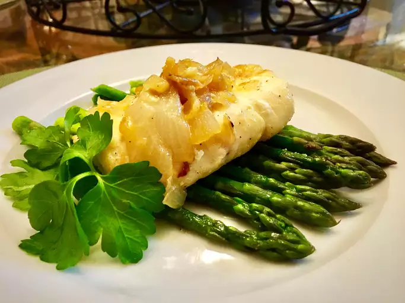

Cod

Picture credit: AllRecipes
Description
A delicious pan-cooked cod. This recipe would go perfect with cooked asparagus
Ingredients
- 2 tablespoons olive oil
- 1/2 onion, chopped
- 1 clove garlic, chopped
- 1 teaspoon lemon pepper
- 1 (3 ounce) fillet cod, or more to taste
- 2 tablespoons dry white wine
- (Optional) 1 tablespoon grated Parmesan cheese, or to taste
Steps
- Heat olive oil in a large frying pan over medium-high heat; cook and stir onion, garlic, and lemon pepper until onion is slightly tender, about 3 minutes. Add cod to the frying pan, flipping the cod over to coat both sides with oil.
- Cook cod in the onion mixture until it flakes easily with a fork, occasionally sliding fish around so it doesn't stick, about 4 minutes per side.
- Pour wine into the frying pan and bring to a boil while scraping the browned bits of food off of the bottom of the pan with a wooden spoon. Slide the cod around the pan, flip it over, and slide around again until coated in wine, about 1 minute.
- Transfer cod to a serving plate; top with onion mixture and Parmesan cheese.